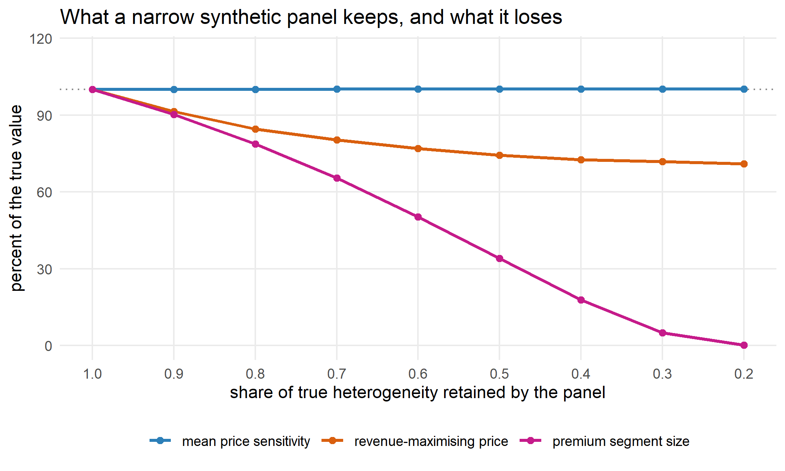

If you buy a panel of LLM synthetic respondents for a conjoint analysis, the validation report you get back will compare average part-worths and predicted choice shares. Those are exactly the numbers that survive the failure mode the method actually has, and the price you set afterwards is not.
The known problem is that LLM respondents produce response distributions that are too narrow. Maier et al. built their semantic similarity rating method around it, because asking a model directly for a numeric rating “produces unrealistic response distributions” (arXiv 2510.08338, October 2025). What nobody writes down is what a narrow distribution costs you once the study reaches a pricing decision. So I simulated a conjoint where I picked the true answer myself, compressed the heterogeneity the way the literature says these panels do, and ran both panels through the same workflow.
# One population, two panels. Identical MEAN price sensitivity by construction,
# and heterogeneity shrunk by a factor lambda in the synthetic one.
k_mean <- 0.05 # E|price coefficient|, held fixed across every panel below
s_full <- 0.90 # true dispersion in log price sensitivity
mu_f <- 1.20 # mean part-worth for the premium feature
sg_f <- 0.90
mu_b <- 0.50 # mean brand part-worth
sg_b <- 0.60
asc_none <- -1.5 # utility of not buying
mc <- 12 # marginal cost, so there is a real price to optimise
LAM <- 0.40 # the synthetic panel keeps 40% of the true spread
# Price sensitivity is lognormal, which is standard because it keeps the sign
# right. Holding E|b_price| fixed while shrinking the spread requires moving the
# log-mean, so m is a function of s rather than a constant.
log_m <- function(s) log(k_mean) - s^2 / 2The premium feature is worth $24 to the average buyer. Prices tested in the survey run from $25 to $85, three products plus a no-buy option, 300 respondents, 12 tasks each.
n_resp <- 300
n_task <- 12
n_prod <- 3
prices <- c(25, 45, 65, 85)
draw_pop <- function(n, lambda, seed) {
set.seed(seed)
s <- s_full * lambda
data.frame(id = seq_len(n),
bp = -exp(log_m(s) + s * rnorm(n)),
bf = mu_f + sg_f * lambda * rnorm(n),
bb = mu_b + sg_b * lambda * rnorm(n))
}
make_design <- function(seed) {
set.seed(seed)
n <- n_resp * n_task * n_prod
d <- data.frame(
id = rep(seq_len(n_resp), each = n_task * n_prod),
task = rep(rep(seq_len(n_task), each = n_prod), n_resp),
price = sample(prices, n, TRUE),
feat = rbinom(n, 1, 0.5),
brandB = rbinom(n, 1, 0.5))
d$obs <- (d$id - 1) * n_task + d$task
d
}
sim_choice <- function(design, pop, seed) {
set.seed(seed)
b <- pop[match(design$id, pop$id), ]
d <- design
d$V <- b$bp * d$price + b$bf * d$feat + b$bb * d$brandB
none <- unique(d[, c("id", "task", "obs")])
none$price <- 0
none$feat <- 0
none$brandB <- 0
none$V <- asc_none
d <- rbind(d[, names(none)], none)
d <- d[order(d$obs), ]
d$none <- as.integer(d$price == 0 & d$feat == 0 & d$brandB == 0)
d$negPrice <- -d$price
d$choice <- 0L
for (k in split(seq_len(nrow(d)), d$obs)) {
p <- exp(d$V[k])
d$choice[k[sample.int(length(k), 1, prob = p / sum(p))]] <- 1L
}
d
}
design <- make_design(11)
human <- sim_choice(design, draw_pop(n_resp, 1.0, 21), 31)
synth <- sim_choice(design, draw_pop(n_resp, LAM, 21), 31)Fit the same mixed logit to each panel, holding out the last two tasks. This is the model a conjoint study actually reports.
library(logitr)
fit_panel <- function(d) {
logitr(data = d[d$task <= 10, ], outcome = "choice", obsID = "obs", panelID = "id",
pars = c("negPrice", "feat", "brandB", "none"),
randPars = c(negPrice = "ln", feat = "n", brandB = "n"),
numDraws = 200)
}
f_human <- fit_panel(human)
f_synth <- fit_panel(synth)ch <- coef(f_human)
cs <- coef(f_synth)
# E|b_price| = exp(m + s^2/2) is the interpretable quantity, not the log-mean.
mean_bp <- function(cf) exp(cf["negPrice"] + abs(cf["sd_negPrice"])^2 / 2)
# The check a validation report runs: predict the HUMAN holdout choice shares
# from each fitted model and compare against what the humans actually did.
hold <- human[human$task > 10, ]
pred_share <- function(fit) {
p <- predict(fit, newdata = hold, obsID = "obs", returnData = FALSE)
mean(p$predicted_prob[hold$none == 0])
}
data.frame(
quantity = c("mean price sensitivity", "feature part-worth", "brand part-worth",
"predicted product share, human holdout"),
human = round(c(mean_bp(ch), ch["feat"], ch["brandB"], pred_share(f_human)), 4),
synthetic = round(c(mean_bp(cs), cs["feat"], cs["brandB"], pred_share(f_synth)), 4),
row.names = NULL)
## quantity human synthetic
## 1 mean price sensitivity 0.0487 0.0478
## 2 feature part-worth 1.3749 1.3683
## 3 brand part-worth 0.5107 0.5342
## 4 predicted product share, human holdout 0.2545 0.2472c(actual_human_holdout_share = round(mean(hold$choice[hold$none == 0]), 4))
## actual_human_holdout_share
## 0.2478Every central quantity agrees. The synthetic panel predicts the human holdout share to within a fraction of a point, and on that particular number it lands closer to the truth than the human panel’s own model does. On this evidence you would sign off on the panel.
Now look at what the same two fits say about spread.
data.frame(
parameter = c("log price sensitivity", "feature part-worth", "brand part-worth"),
human_sd = round(abs(ch[c("sd_negPrice", "sd_feat", "sd_brandB")]), 3),
synth_sd = round(abs(cs[c("sd_negPrice", "sd_feat", "sd_brandB")]), 3),
row.names = NULL)
## parameter human_sd synth_sd
## 1 log price sensitivity 0.946 0.324
## 2 feature part-worth 1.062 0.597
## 3 brand part-worth 0.648 0.009Price and feature spread are roughly a third of the truth, and brand spread is gone entirely. On brand the panel is one customer, repeated 300 times.
Conjoint output is not the deliverable. The market simulator is. Take each fitted model, put the premium product up against two fixed competitors, and find the price that maximises contribution.
comp <- data.frame(price = c(35, 55), feat = c(0, 1), brandB = c(1, 1))
grid <- seq(15, 200, by = 0.5)
simulate_market <- function(cf, ndraw = 8e4, seed = 7) {
set.seed(seed)
z <- matrix(rnorm(3 * ndraw), ncol = 3)
bp <- -exp(cf["negPrice"] + abs(cf["sd_negPrice"]) * z[, 1])
bf <- cf["feat"] + abs(cf["sd_feat"]) * z[, 2]
bb <- cf["brandB"] + abs(cf["sd_brandB"]) * z[, 3]
e1 <- exp(bp * comp$price[1] + bf * comp$feat[1] + bb * comp$brandB[1])
e2 <- exp(bp * comp$price[2] + bf * comp$feat[2] + bb * comp$brandB[2])
d0 <- e1 + e2 + exp(cf["none"])
share <- vapply(grid, function(p) {
ef <- exp(bp * p + bf)
mean(ef / (ef + d0))
}, 0)
list(share = share,
opt = grid[which.max(share * (grid - mc))],
seg = 100 * mean((bf / -bp) > 50))
}
truth_cf <- c(negPrice = log_m(s_full), feat = mu_f, brandB = mu_b, none = asc_none,
sd_negPrice = s_full, sd_feat = sg_f, sd_brandB = sg_b)
m_truth <- simulate_market(truth_cf)
m_human <- simulate_market(ch)
m_synth <- simulate_market(cs)
data.frame(
source = c("truth", "human panel", "synthetic panel"),
optimal_price = c(m_truth$opt, m_human$opt, m_synth$opt),
premium_segment_pct = round(c(m_truth$seg, m_human$seg, m_synth$seg), 1),
row.names = NULL)
## source optimal_price premium_segment_pct
## 1 truth 58.5 34.1
## 2 human panel 63.5 40.6
## 3 synthetic panel 43.5 14.0The synthetic panel sets the price 26% below the truth and 31% below what the human panel recommends, and it sizes the premium segment at 41% of its true value. Contribution at the synthetic price is 94.8% of the best available, so the money lost is real but modest. That flatness is the trap. Profit curves are flat near their peak, which is precisely why a price recommendation can be a quarter too low without anything downstream looking obviously broken.
Compressing heterogeneity leaves the mean where it was and removes the tails. Demand at a high price is made entirely of the price-insensitive tail, so it is the first thing to go.
k <- match(c(45, 65, 85, 125), grid)
data.frame(price = grid[k],
truth_share = round(m_truth$share[k], 4),
synth_share = round(m_synth$share[k], 4),
ratio = round(m_synth$share[k] / m_truth$share[k], 2))
## price truth_share synth_share ratio
## 1 45 0.2633 0.2873 1.09
## 2 65 0.1701 0.1442 0.85
## 3 85 0.1159 0.0699 0.60
## 4 125 0.0618 0.0171 0.28At the prices the survey tested the two panels agree. Past them they diverge, and a pricing study is an extrapolation past the tested range by construction. Sweeping the compression factor shows how cleanly the quantities separate.
sweep_lambda <- function(lambda, ndraw = 8e4, seed = 7) {
set.seed(seed)
z <- matrix(rnorm(3 * ndraw), ncol = 3)
s <- s_full * lambda
bp <- -exp(log_m(s) + s * z[, 1])
bf <- mu_f + sg_f * lambda * z[, 2]
bb <- mu_b + sg_b * lambda * z[, 3]
e1 <- exp(bp * comp$price[1] + bf * comp$feat[1] + bb * comp$brandB[1])
e2 <- exp(bp * comp$price[2] + bf * comp$feat[2] + bb * comp$brandB[2])
d0 <- e1 + e2 + exp(asc_none)
share <- vapply(grid, function(p) {
ef <- exp(bp * p + bf)
mean(ef / (ef + d0))
}, 0)
data.frame(lambda = lambda,
mean_price_coef = mean(-bp),
opt_price = grid[which.max(share * (grid - mc))],
premium_seg = 100 * mean((bf / -bp) > 50))
}
lams <- seq(1, 0.2, by = -0.1)
sw <- do.call(rbind, lapply(lams, sweep_lambda))
base <- sw[sw$lambda == 1, ]
round(sw, 4)
## lambda mean_price_coef opt_price premium_seg
## 1 1.0 0.0499 58.5 34.1338
## 2 0.9 0.0499 53.5 30.7975
## 3 0.8 0.0500 49.5 26.8500
## 4 0.7 0.0500 47.0 22.3413
## 5 0.6 0.0500 45.0 17.1600
## 6 0.5 0.0500 43.5 11.6337
## 7 0.4 0.0500 42.5 6.0925
## 8 0.3 0.0500 42.0 1.6938
## 9 0.2 0.0500 41.5 0.0675
Figure 1: Only the validated quantity is stable. Optimal price and segment size fall away as the panel loses spread.
The blue line is what a validation report checks. The other two are what the study is for.
An independent check, because a Monte Carlo integral deserves one. The same optimum computed in Python by three-dimensional Gauss-Hermite quadrature, a deterministic method with no sampling in it at all.
import numpy as np
k_mean, s_full = r.k_mean, r.s_full
mu_f, sg_f, mu_b, sg_b = r.mu_f, r.sg_f, r.mu_b, r.sg_b
asc_none, mc = r.asc_none, r.mc
cp, cf_, cb = np.array([35., 55.]), np.array([0., 1.]), np.array([1., 1.])
def opt_price(lam, n=24):
x, w = np.polynomial.hermite_e.hermegauss(n)
w = w / w.sum()
s = s_full * lam
bp = -np.exp(np.log(k_mean) - s**2 / 2 + s * x)
bf = mu_f + sg_f * lam * x
bb = mu_b + sg_b * lam * x
BP, BF, BB = bp[:, None, None], bf[None, :, None], bb[None, None, :]
W = w[:, None, None] * w[None, :, None] * w[None, None, :]
d0 = (np.exp(BP * cp[0] + BF * cf_[0] + BB * cb[0])
+ np.exp(BP * cp[1] + BF * cf_[1] + BB * cb[1]) + np.exp(asc_none))
grid = np.arange(15, 200.5, 0.5)
share = np.array([(W * (np.exp(BP * p + BF) / (np.exp(BP * p + BF) + d0))).sum()
for p in grid])
return grid[(share * (grid - mc)).argmax()], (w * (-bp)).sum()
for lam in [1.0, 0.8, 0.6, 0.4, 0.2]:
p, mb = opt_price(lam)
print(f"lambda {lam:.1f} optimal price {p:6.1f} E|b_price| {mb:.5f}")
## lambda 1.0 optimal price 58.5 E|b_price| 0.05000
## lambda 0.8 optimal price 49.5 E|b_price| 0.05000
## lambda 0.6 optimal price 45.0 E|b_price| 0.05000
## lambda 0.4 optimal price 42.5 E|b_price| 0.05000
## lambda 0.2 optimal price 41.5 E|b_price| 0.05000Quadrature returns the same optimal price as the R simulation at every compression level, and the mean price coefficient sits on 0.050 throughout. The collapse is a property of the model, not of the random draws.
The compression is recoverable from choice data, which means you can test for it. Fit the mixed logit to your synthetic panel and to a small human pilot, then divide the estimated standard deviations.
lambda_hat <- abs(cs[c("sd_negPrice", "sd_feat", "sd_brandB")]) /
abs(ch[c("sd_negPrice", "sd_feat", "sd_brandB")])
round(c(lambda_hat, "true lambda" = LAM), 3)
## sd_negPrice sd_feat sd_brandB true lambda
## 0.343 0.563 0.013 0.400Read this as a screen and not as a correction factor. All three ratios land well below 1, so the screen fires, which is the job. As point estimates they are poor: only the price ratio is close to the true 0.4 (0.34), the feature ratio overshoots at 0.56, and the brand ratio is 0.01 because a standard deviation near zero is barely identified. The parameter that collapses hardest is the one whose collapse is hardest to measure, so this tells you to keep humans in the study rather than telling you how much to rescale by.
I did not query a language model. This post takes the narrowness that the literature documents, applies it as a known compression factor, and prices the consequence. It is a statement about what a documented failure mode costs, not new evidence that the failure mode exists. If your panel reproduces human spread, none of this applies to it, and methods designed to fix exactly this (semantic similarity rating is the current one) exist for that reason.
Three more limits worth naming. The compression here is uniform across attributes, and a real panel will lose more spread on some than others. Hierarchical Bayes estimation adds its own shrinkage on top, so a real workflow is likely to be worse than this rather than better. And the truth here is a mixed logit, so I have given the model the correct functional form and still lost the price.
The mixed logit machinery behind all of this, and how to run a conjoint properly, is in Marketing Research.